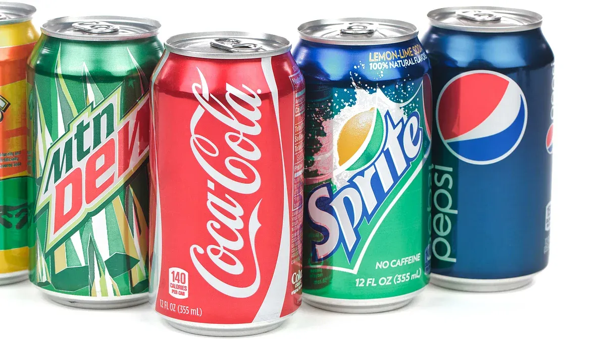

A soft drink is a sweet, carbonated beverage that is usually served cold and comes in a variety of flavors such as cola, sprite, royal, mountain dew and pepsi. It is typically made with carbonated water, sweeteners, flavorings, and sometimes caffeine. Soft drinks are commonly enjoyed as a refreshing beverage with meals or as a casual drink.
